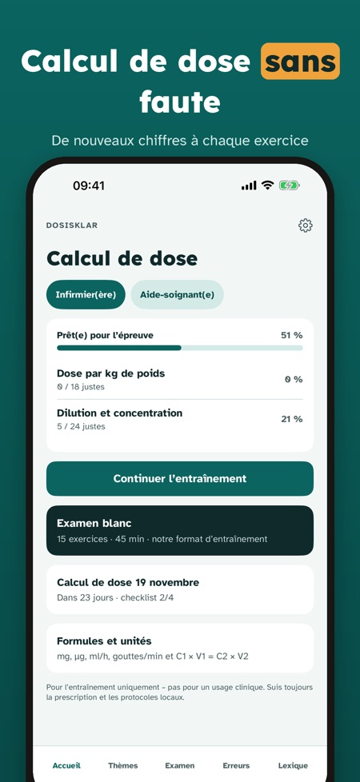
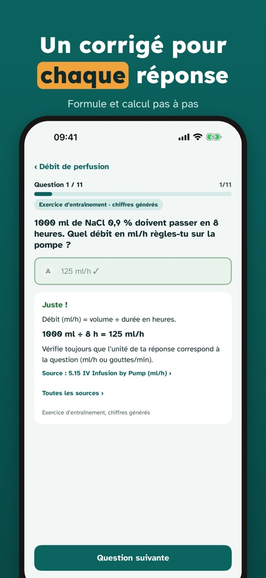
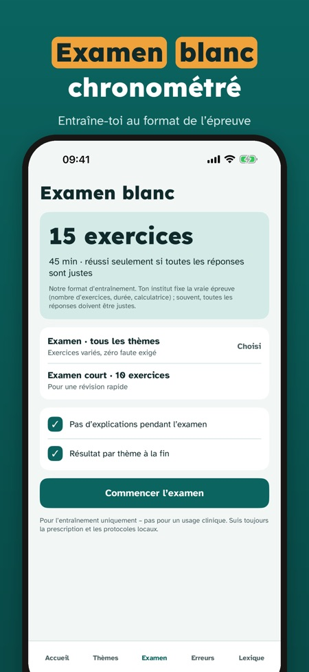

Révisions pour étudiants IDE. Entraîne-toi au calcul de dose avec de nouveaux exercices : unités, débit de perfusion et dilution, corrigés pas à pas. Pour réviser – pas pour un usage clinique.



Dosisklar aide les étudiants en soins infirmiers à s’entraîner au calcul de dose – avec de nouveaux chiffres à chaque exercice et un corrigé pas à pas.
Tu peux t’entraîner sur 20 questions, passer un examen blanc complet et utiliser le lexique et la checklist sans achat. La version complète est un achat unique qui débloque toutes les questions, les examens blancs et les statistiques. Sans abonnement.
Dosisklar sert uniquement à réviser et ne doit pas être utilisé pour calculer des doses pour des patients. L’app est indépendante et n’est liée à aucun institut de formation.